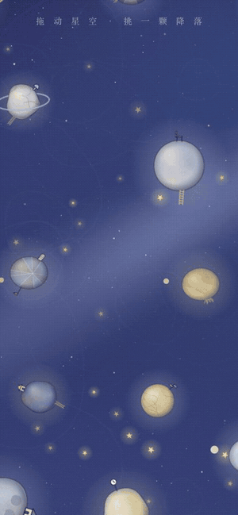
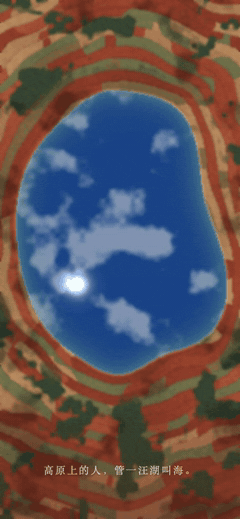
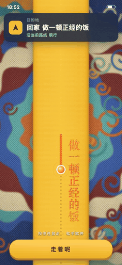
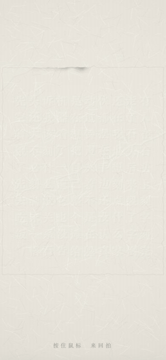
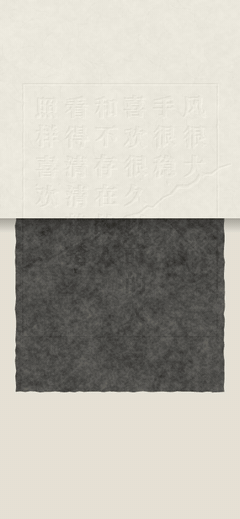
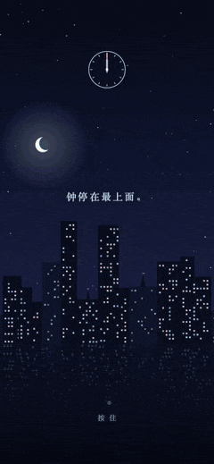

用 10 个问题向 6 位朋友收集少量信息，按 7 种组合分别交给 Claude 自由创作，再让每位朋友在全部 42 件作品里找自己。这是这次实验的设计、过程和结果。
我按两个维度给信息分类：用户是否意识到这条信息在代表自己（有没有身份认同），以及这条信息是不是用户自己选的（有没有选择权）。以这两个维度为坐标轴，能收集到的信息分成四个象限。本次的 10 个问题落在其中三个象限里。
横轴：用户有没有选择权；纵轴：用户有没有意识到它在代表自己。
| 组 | 问题 | 象限 |
|---|---|---|
| A | 1. 出生日期（年月日、时辰）；2. 真名；3. 出生地 | 第四象限 |
| B | 4. 微信 combo：头像、朋友圈背景、个性签名；5. "人生作品"；6. comfort food；7. comfort 衣服 | 第一象限 |
| C | 8. 解锁后第一屏截图；9. 随便发一句话；10. 从 1 到 100 里随机选一个数字 | 第二象限（8、9）、第四象限（10） |
朋友不想答的问题可以用 👽 代替。每位朋友的三组信息按 A、B、C、A＋B、A＋C、B＋C、A＋B＋C 七种组合，各开一个互相隔离的 Claude 会话自由创作：不限形式，只有两条硬规则——不能原样出现资料里的名字、数字、原句和原图；不能冒犯对方。模型用 Claude Opus 5.5、推理强度 high，每个会话 4 到 15 分钟（max 强度要将近 1 小时）。6 位朋友 × 7 种组合，一共 42 件作品。
42 件作品打乱、去掉标题后交给每位朋友：看过的作品标"Me！""可以不承认是我吗？"或"不是我"；看完在自己标过的作品里挑一件最像自己的；然后揭晓哪 7 件是自己的，再给这 7 件各打 1 到 5 分。
第一版以"镜子"为主题，作品是一圈圈环绕的玻璃片。朋友的反馈有两点：想知道哪些已经看过；镜子的比喻不对，里面大多是别人的作品，更像在探索别人的世界。于是第二版改成《小王子》式的星空：每件作品是一颗小星球，颜色、表面、大小、转速和小物件都按作品的创作说明来定；点一颗星球，光速降落进入作品；去过的星球会出现虚线和路灯，可以点亮，也可以留下一朵玫瑰。

星空画廊 v2降落一段为 4 倍慢放拖动星空 → 点一颗星球降落 → 看作品 → 返回 → 点亮路灯 → 留下一朵玫瑰。
邀请本身就有阻力。私聊 6 位朋友，有人很快答应，有人拖到第二天。补充一句"很快，只要 3 分钟"之后，答应得爽快多了。
一问一答比一次发完效果好。逐题提问并回应几句，朋友的回答更长、信息更多，完成得更快，还常主动补充原因。
"可以不回答"非常重要。事先说明不想答就回一个 👽，朋友真的会用，也更安心，不会觉得是在拒绝。
两种不信任。一是对 AI：有朋友觉得"把什么都透露给 AI 了"，所以要事先说明信息会交给 AI。二是人与人的不对等：有朋友问完后要求我也回答全部问题，"不然就像一个人脱光了衣服，另一个人还穿戴整齐"。产品要让用户觉得被回应，而不是只被看光。
"答无"会让人不安。问到"人生作品"时，读书看片不多的朋友对"没有"这件事有些不安，需要及时安抚，比如"没有人生作品，说明你的人生没有被某一件事限定"。
截至 10 月 15 日，5 位朋友提交了结果，P02 还没交。随机基线：42 件里本人占 7 件，随便挑一件是本人的概率约 1/6（17%）。
每格是一件本人作品：颜色是当时的标记，数字是揭晓后本人打的分（1 到 5）。悬停可看作品名。最下面一行是每个组合被本人认出的件数和平均分。
"最像自己"一题有 3 人选中了本人作品，但它只能在标过 Me! 或"可以不承认"的作品里选，和 Me! 的结果不独立。P01 只看了 13 件、P03 只看了 19 件，没看到的作品自然认不出，召回率被低估了。
按作品用了几组信息分组，本人当时标 Me! 的比例。虚线是随机水平 17%。
单组信息生成的作品被本人认出 5/15（33%），两组的 3/15（20%），三组的 1/5（20%）。从创作说明看，信息一多，模型会挑一两条最有料的信息做骨架，其余只做点缀，作品的指向反而变散。含 A、B、C 组的作品分别被认出 5/20、5/20、4/20，三组之间没有明显的赢家。
揭晓后本人给自己作品打的分。上排是当时标了 Me! 的 5 件，下排是当时没标 Me! 的 23 件，点的颜色是当时的标记。
42 份创作说明里，每道题在"可用时被引用的比例"（条），以及被写成"核心/主要依据"的次数（右侧数字）。
每行是一位朋友，每列是作品的主人；格子里是标成 Me! 或"可以不承认"的次数，颜色越深越多。对角线是认自己的作品。
"潮对我来说是一个本能的意象。我总觉得如果我死了骨灰一半是要撒在八月初八钱江潮里，另一半撒在西湖断桥底下的。"P01

P06·A《一汪》只用了 A 组信息；本人当时标了"不是我""'高原上把湖叫做海'这句话我也很喜欢。因为我们家就是这样的！嘿嘿。我说实话会叫海子。……总感觉也是海。一丝丝的乡愁来了。"P06
"这个美术挺厉害的。ai想的？"P05
"我这边表现最好的问题就是微信背景喜欢听歌的这个爱好。还有那一句想说的话。……既然音乐元素这么重要的话，我其实特别喜欢那个可以音乐互动的那个东西。……比如说我那个节拍器的那个就可以点，然后有音符弹出来。……把音乐这个能够兼具氛围感和互动感的元素可能突出一下，我觉得我个人可能会比较喜欢。"P04
P01 有作品直接从朋友圈背景生成；P02·C《顺路》的黄纸条压在彩色织物上，构图和配色都来自锁屏壁纸；P06 的 7 件里 6 件做成碑刻拓片，P06 自己也说"擦涂后出现画面的类型，全是我的爱碑和刻字"。

P02·C《顺路》黄纸条和织物取自锁屏壁纸
P06·C《拓》碑刻来自壁纸；P06 有 6 件同名
P06·AB《拓》同一个人的作品趋同每件都可以点开。

P03·A《同一张钟面》按住天亮，松手天黑，钟面不动"……那个长按，然后白天和夜晚就是就时间不变，……就不太确定到什么时候它结束了。就如果每一个镜子的那个画面推进最后结束的时候，也有一个小提示，我觉得可能会好一点。"P04
生成时可以要求每件作品都有明确的结尾。
"是不是一个主题的有点太多了？就比如说那节拍器，感觉就有三四个吧。说实话，一开始我一个都没看出来哪个是我。"
P04 的 7 件里确实有 3 件是节拍器（《节拍》《下一拍》《走平》）。同一个人的作品趋同，是这一轮生成最明显的问题。
满分 42 件；右侧是用时。找到自己的 7 件远用不了这么多。
"其实你的 project 让我想起了《小王子》。小王子里有很多小星球，每个星球上都有且只有一个居民，这个星球代表了他们的人生哲学和精神状态。小王子是一个旅者，但是在和每个居民交互了之后，他也收获了他们的人生态度加入了他自己的思想循环。"
有朋友猜某件作品是不是另一位共同朋友的；也有朋友猜节拍器那件是谁。（原文档里的聊天截图没有收录在本页。）
"会吧！我会很有占有欲（什么）就是在可以猜测它是否属于我的前提下 我会说 嗯这个整体来说很对 能改一下这句话就好了 …… 我就不喜欢往里面丢东西 但后来一想 如果是石头的话可以接受 …… 然后其实美工我都很喜欢 希望它们都是我的，阿门 …… 但是像那个擦涂后出现画面的类型 全是我的爱碑和刻字"P06
"往里面丢东西……石头"是 P06·A《一汪》；"蜡笔彩绘、写可爱行为的"是 P02·B《没有，》；"擦涂后出现画面"是 P06 自己的《拓》。认领既来自情感上的占有欲，也依赖可辨认的视觉元素。
"会的，但不一定想要知道对面是谁，就是想要类似漂流瓶的能写点匿名文字。我看到有些小世界会想说，哎呀，我也是曾经有这样的感觉，但是现在如何如何。想要按 +1，或者按加油。"P04
本页由实验数据自动生成。作品编号写作"朋友·组合《标题》"。查看全部 42 件作品 →